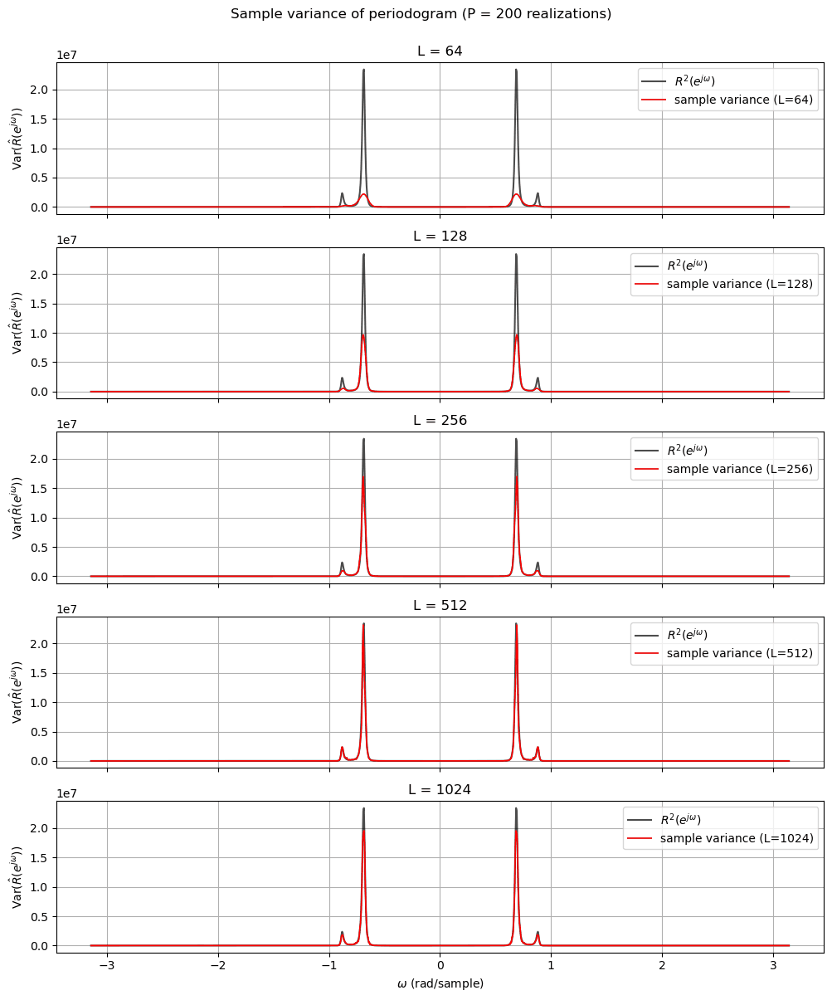
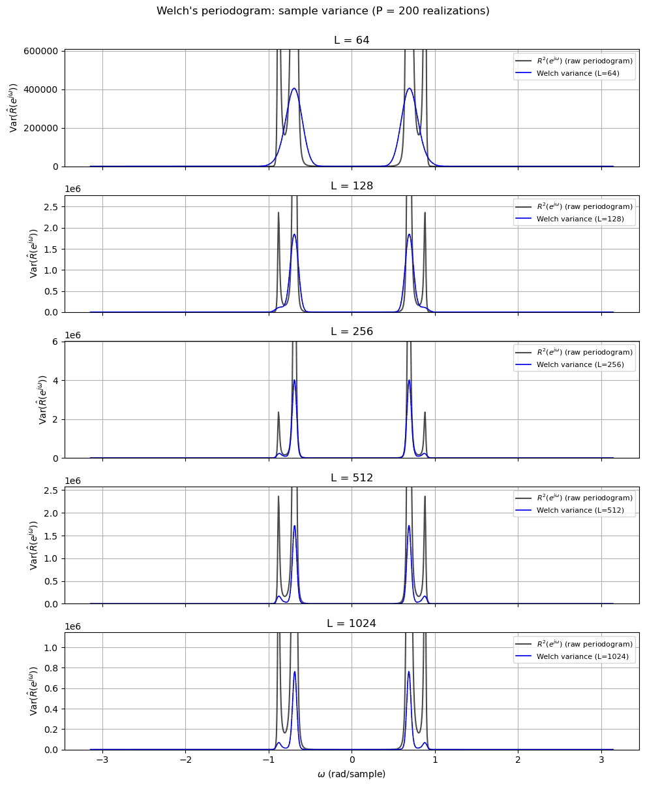
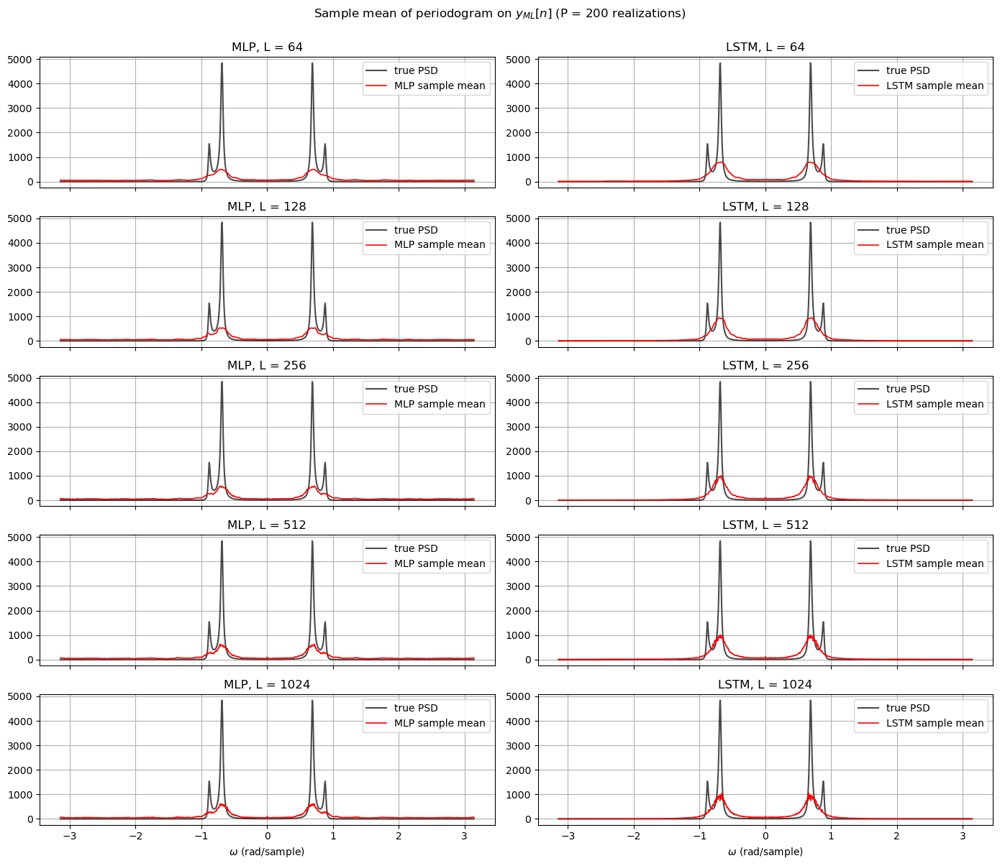
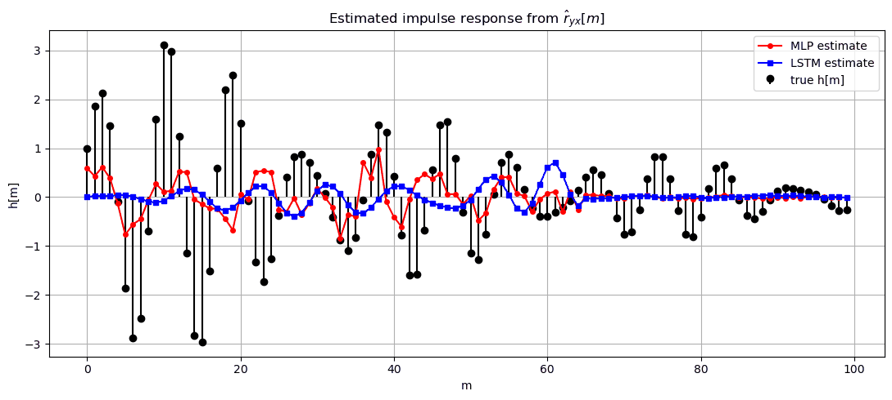
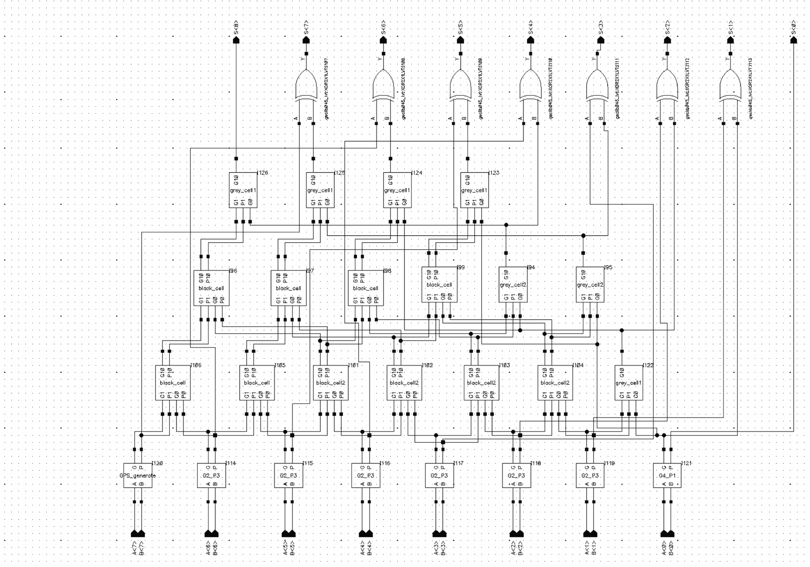
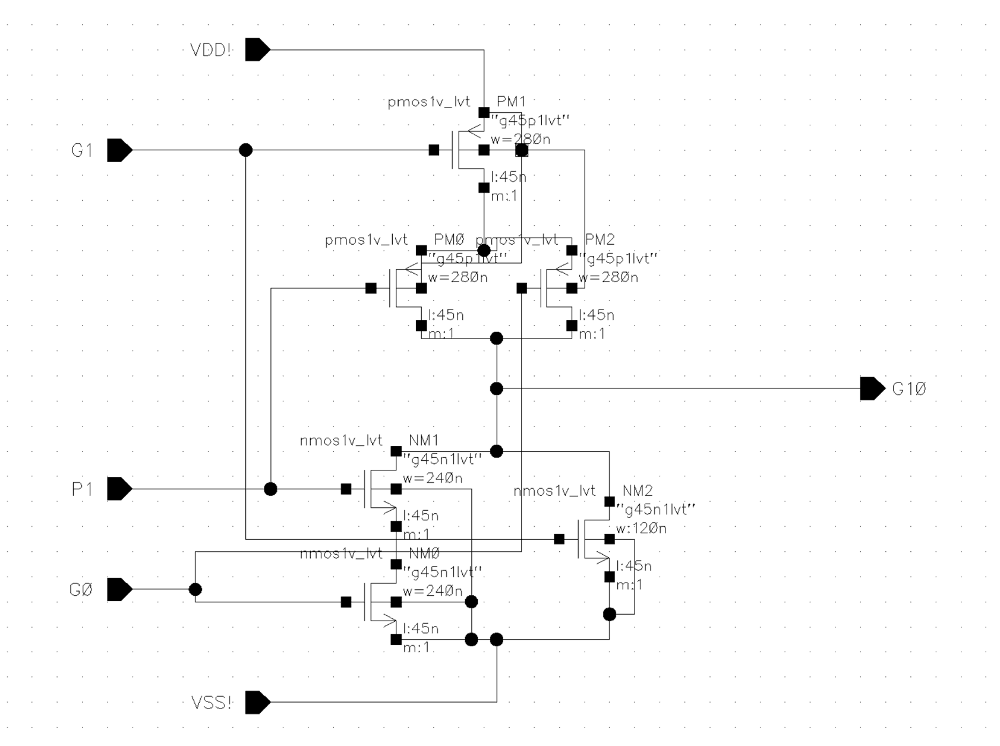
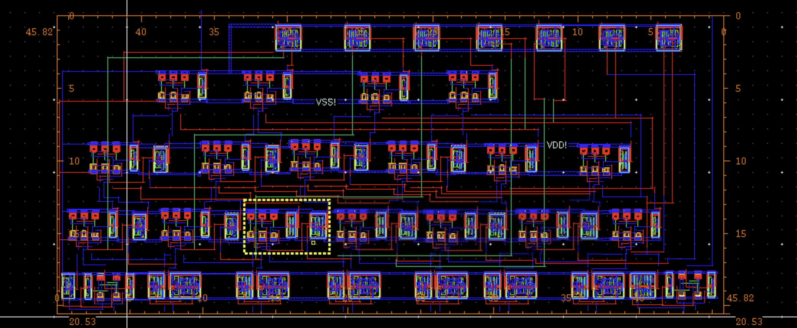
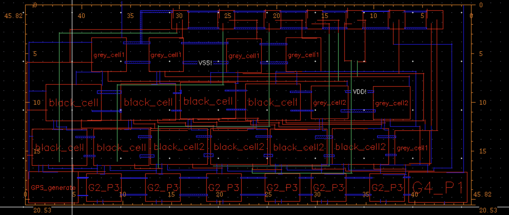
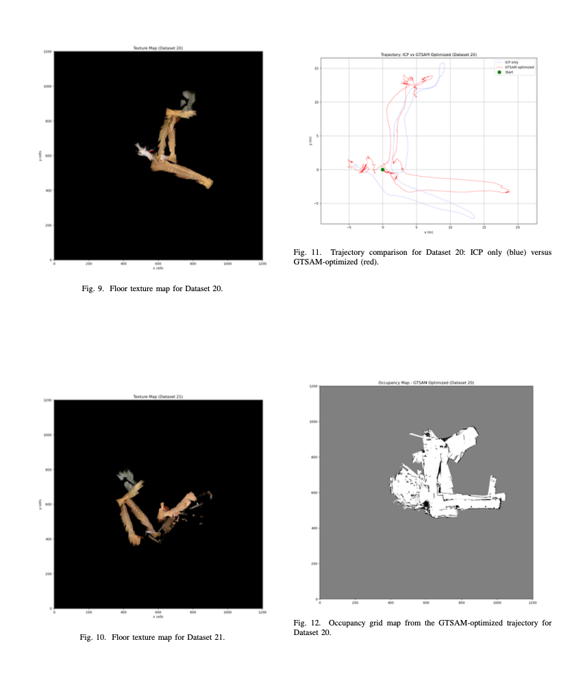
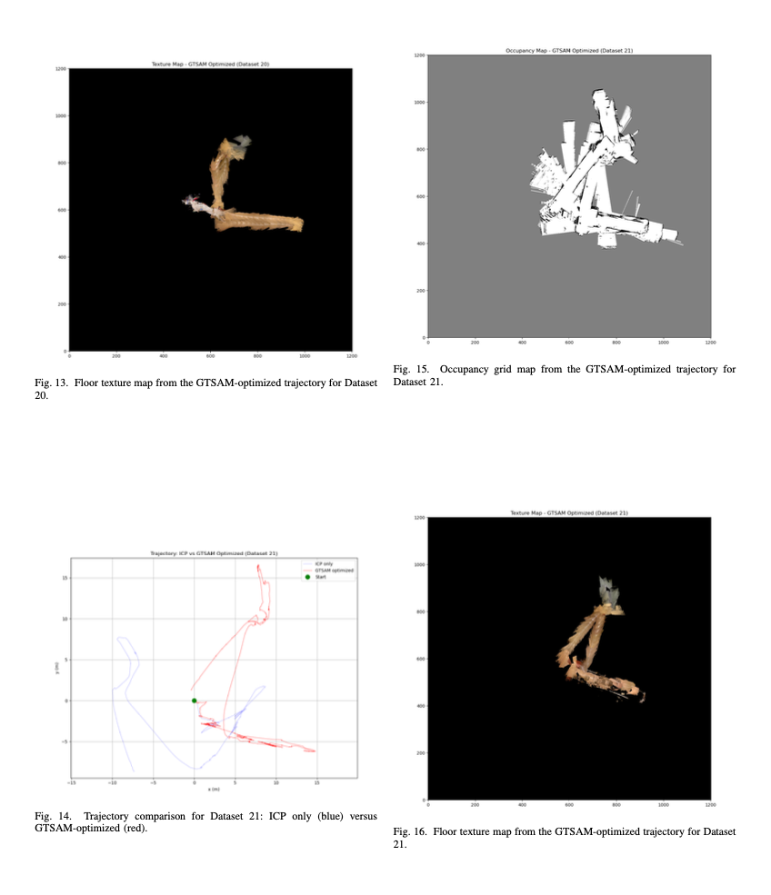

Projects
Email me if you want to hear more about any of them.
Low-Power ML Accelerator (in progress)
Verilog · PyTorch · Quartus Prime
A Verilog accelerator for quantized neural network inference, mapped from a model trained in PyTorch.
Details
- Applying quantization, pruning, and sparsity-aware techniques to the model.
- Verifying the RTL with testbenches generated in Python.
Spectral Estimation and Machine Learning
Python · SciPy · PyTorch
Classical spectrum estimates against neural networks, on a resonant random process.
Details
- Compared periodogram and Welch estimates over 200 Monte Carlo trials: the raw periodogram stays noisy however much data it gets, while Welch averaging cuts the variance.
- Trained MLP and LSTM models to imitate the filter. Both fit the data but missed the true spectral peaks by 2–5×.




8-bit Kogge-Stone Adder
Cadence Virtuoso · 45 nm CMOS
A fast adder co-designed at the transistor level, running at 2.6 GHz after layout against a 1.8 GHz target.
Details
- Low-threshold transistors on the critical path. 35% faster than a ripple-carry baseline after layout, with clean DRC and LVS.
- Led verification, and traced a 4.5 GHz pre-layout speed ceiling to the testbench flip-flops rather than the adder itself.




LiDAR-Based SLAM
Python · NumPy · GTSAM
Tracking a robot's path and mapping the building around it, from wheel encoder, IMU, LiDAR, and depth camera data.
Details
- ICP scan matching written from scratch, with accumulated drift removed by pose-graph optimization and loop closures.
- Occupancy-grid and color floor maps built from the corrected trajectory.


More projects